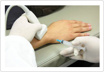
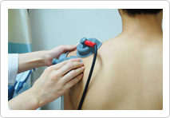
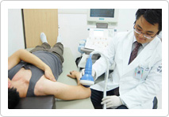
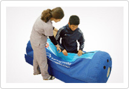

关节非手术的阶段性治疗法
第1阶段
超声波确认与注射疗法

激痛点注射（TPI）
向肌筋膜痛综合症患者（肌肉凝结症状）进行注射。注射后的1～2天反而觉得疼痛更严重，但是再过2～3天疼痛会慢慢缓解，渐渐完全消失。
韧带增值注射
这是通过注射刺激形成新的骨和纤维细胞，如同把已损伤的韧带和肌肉筋融合在骨头上一样的疼痛治疗方法。
hyruan注射
把注射液注入到关节内即可，这是治疗初期关节炎时普遍使用的方法。
第2阶段
物理治疗和物理运动疗法

破裂部位小，活动不多时，通过物理治疗和运动疗法阻止破裂部位继续破裂。
ICT（中周波（干涉波）治疗器），US（超声波刺激治疗），运动疗法，Tens（低周波治疗器
第3阶段
体外冲击波（ESWT）治疗方法

体外冲击波治疗是让神经细胞膜产生物理变化，抑制疼痛的传播，在手术部位形成化学变化以及化学复合体，从而缓解疼痛的刺激。
体外冲击波治疗可以帮助血管的重生，刺激并促进筋以及其周围组织和骨的愈合过程。同时促进血液循环、组织再生，可使症状的复发最小化，尤其对治疗筋的损伤很有效。
第4阶段
高压氧治疗法

高压氧可提高人体内氧的浓度，可改善低氧状态，从而可以充足回植术或肌肉/韧带损伤或骨折后的炎症期到恢复期的患病部位的细胞氧分的需求，同时可以促进新陈代谢，促进恢复。
而且对运动比赛后恢复疲劳、增进活力、激活肌肉、燃烧堆积脂肪、提高运动能力以及快速恢复有很大的帮助。